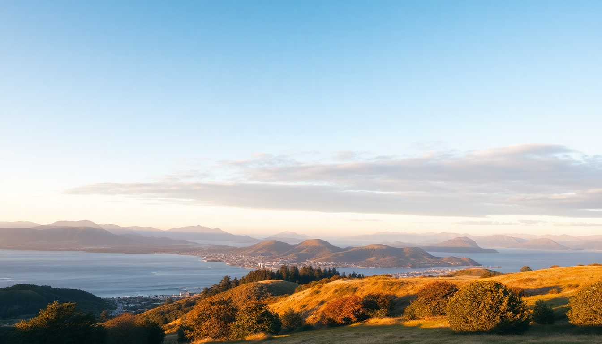

Best Time to Visit New Zealand: Month-by-Month Guide

I’ve been to New Zealand three times now, and each trip felt like a completely different country depending on the month. Summer in Queenstown is packed with jetboats and backpackers; winter there is quiet, crisp, and all about the slopes. This guide breaks down every month so you can pick the timing that actually fits your trip style — not just the Instagram-perfect shot.
What’s the weather like in New Zealand month by month?
New Zealand flips the Northern Hemisphere calendar. December through February is peak summer — warm, crowded, and expensive. June through August is winter, with snow in the South Island and rain in the north. Shoulder months (October-November, March-April) are my sweet spot: fewer tourists, mild weather, and lower prices.
I’ve organized this by month so you can scan for the one that matches your plans.
January: High summer, beach mode, and packed roads
January is the heart of New Zealand summer. Expect long, sunny days and water temperatures that actually feel warm. The downside? Everyone else is on holiday too. Campsites and holiday parks book out weeks ahead.
- Auckland: Hit Mission Bay for a swim, then grab fish and chips from The Fishpot. The Hauraki Gulf islands (Waiheke, Rangitoto) are busy but worth it.
- Queenstown: The Milford Sound cruises are full by 9 a.m. Book the first departure. We did a late one and spent half the time in a queue of boats.
- Wellington: Oriental Bay is packed with locals. The Zealandia ecosanctuary is quieter in the morning — go at opening.
- Christchurch: New Brighton Beach is a solid choice. The Christchurch Farmers’ Market on Saturdays is a good pitstop for stone fruit.
February: Still summer, slightly fewer crowds
February is basically January but with a tiny dip in tourist numbers. The weather stays hot, especially in the North Island. This is the best month for hiking the Tongariro Alpine Crossing — fewer clouds, solid visibility.
- Auckland: Tiritiri Matangi Island (bird sanctuary) is less crowded than January. Book the ferry from Gulf Harbour.
- Queenstown: Ben Lomond Track is a tough 3-4 hour hike with killer views of the lake. Do it early to avoid afternoon heat.
- Wellington: Te Papa Museum is free and air-conditioned — good for a rainy afternoon. It rains about 10 days in February, so pack a shell.
- Christchurch: The Arts Centre has a weekend market with local crafts. The Cardboard Cathedral is worth 20 minutes.
March: Shoulder season starts — my favorite month
March is the sweet spot. Summer weather lingers, kids are back in school, and prices drop. The Wine Country around Blenheim and Martinborough is in harvest mode. We drove the Marlborough Sounds in late March and had entire trails to ourselves.
- Auckland: Mount Eden summit is still warm at sunset. Grab dinner at Orphans Kitchen on Ponsonby Road — a bit hipster, but the lamb is great.
- Queenstown: The Routeburn Track (great walk) is open and not yet muddy. Book huts early — they sell out by August.
- Wellington: Cuba Street is lively without the summer crush. Fidels Cafe does a solid flat white.
- Christchurch: The Port Hills offer good hiking. Lyttelton village is a 15-minute drive and has a great Saturday market.
April: Autumn colors and crisp mornings
April is for photographers. The Southern Alps get a dusting of snow, and the deciduous trees in Christchurch’s Hagley Park turn gold. Rain increases, especially in the west. We got soaked on the West Coast near Franz Josef Glacier in mid-April — bring proper rain gear.
- Auckland: Waitakere Ranges trails are muddy but less crowded. Piha Beach is dangerous for swimming in April — rip currents are strong.
- Queenstown: Arrowtown is stunning with autumn foliage. The Chinese Settlement (historic gold-mining site) is a free, quick stop.
- Wellington: Mount Victoria Lookout is windy but clear. The Wellington Cable Car is a tourist trap but gives a decent view.
- Christchurch: The Tannery (shopping complex) is indoors and good for a rainy day. Bacon Brothers does a decent brunch.
May: Off-peak, quiet, and cheap
May is low season. Tourist numbers drop, accommodation prices fall, and you’ll have Hobbiton near Matamata almost to yourself. The catch: days are short (sunset around 5 p.m.) and the South Island gets cold at night.
- Auckland: Sky Tower is less crowded. The Auckland Art Gallery is free and worth an hour.
- Queenstown: Ski season hasn’t started yet, so it’s dead quiet. The Onsen Hot Pools are a good way to warm up.
- Wellington: Te Papa again — it’s big enough for a full rainy day. The Beehive (Parliament) offers free tours.
- Christchurch: Willowbank Wildlife Reserve is small but has kiwi birds in a dark enclosure — you’ll actually see them.
June: Winter starts — skiing in the South Island
June brings snow to the Southern Alps. Coronet Peak and The Remarkables near Queenstown open mid-month if conditions are good. The North Island is wet and chilly. We spent a week in Queenstown in June and had the town to ourselves — but the Gondola was closed for maintenance.
- Auckland: Cornwall Park is soggy. The Viaduct area is dead. Go to a pub like The Shakespeare for warmth.
- Queenstown: Ski hire at Small Planet Sports is reasonable. Fergburger is still a 20-minute queue even in winter.
- Wellington: The Boatshed cafe on the waterfront has good soup. Zealandia is quiet — kiwis are more active in winter.
- Christchurch: Christchurch Botanic Gardens are bare but peaceful. The Lotus-Heart restaurant does a good thali.
July: Peak ski season — snow and crowds on the slopes
July is the busiest winter month for Queenstown and Wanaka. The slopes are packed, and accommodation in Queenstown is expensive. We skied The Remarkables in July — the snow was good, but the lift lines were 20 minutes.
- Auckland: Rainbow’s End theme park is quiet. The Wintergardens (glasshouse) are a warm escape.
- Queenstown: Cardrona Alpine Resort is less crowded than Coronet Peak. The Cow restaurant does a decent pizza.
- Wellington: The Roxy Cinema in Miramar is a cozy indie theater. Duke’s Arcade has good coffee.
- Christchurch: The Christchurch Adventure Park has mountain biking even in winter. The Addington Coffee Co-op is a good lunch spot.
August: Still winter, but spring is coming
August is the last month of reliable snow. The days start getting longer. Queenstown is less crowded than July. We did a Milford Sound cruise in August — it was drizzly but dramatic, and we saw seals.
- Auckland: Auckland Domain has a winter garden that’s warm and green. Ponsonby Central food hall is good for a rainy lunch.
- Queenstown: The Nevis Bungy is open but freezing. The Bunker bar has a fireplace.
- Wellington: The Great War Exhibition is a solid museum. Maranui Cafe at Lyall Bay has good views and average coffee.
- Christchurch: The Quake City museum is a sobering 45-minute stop. Strawberry Fare does a good dessert.
September: Spring flip — unpredictable but beautiful
September is transitional. Snow melts in the South Island, and daffodils bloom in Christchurch. The weather is a gamble — we had sun, rain, and hail in one day on the Otago Peninsula. It’s quiet everywhere except for school holidays (late September).
- Auckland: Auckland Zoo is quiet. Karangahake Gorge is good for a walk — the tunnels are fun.
- Queenstown: Glenorchy is less crowded. The Paradise area (near Glenorchy) is great for photos.
- Wellington: The Botanic Garden has tulips. Cable Car Museum is free and small.
- Christchurch: Akaroa (French settlement) is a 90-minute drive. The Hector’s dolphins tour is active in spring.
October: Spring in full swing — lambing season and warming days
October is a solid shoulder month. The weather is milder, and the crowds are still low. The Southern Alps are green again. We drove the Crown Range Road between Queenstown and Wanaka in October — no snow, clear roads, and fewer cars.
- Auckland: Rangitoto Island hike is good in spring — the pohutukawa trees are budding. Mission Bay is still too cold for swimming.
- Queenstown: The Shotover Jet is running. Amisfield Bistro has a good lunch menu.
- Wellington: The Wellington Zoo is quiet. The Southern Walkway is a solid 3-hour city hike.
- Christchurch: The Christchurch Farmers’ Market has spring produce. Riverside Market is a good indoor food hall.
November: Pre-summer buzz — my second-favorite month
November is when everything starts buzzing. The weather is warm but not hot, and tourist numbers are rising but not peak. The Tongariro Alpine Crossing is open and not yet busy. We did the Abel Tasman Coast Track in November — perfect temperature and no sandflies.
- Auckland: Waiheke Island wineries (like Mudbrick) are busy on weekends. Go on a weekday.
- Queenstown: The Gibbston Valley wine region is good for a tasting. Kinross does a good platter.
- Wellington: The Wellington Sevens rugby tournament happens in November — avoid if you’re not into crowds.
- Christchurch: The Christchurch Gondola has clear views. Sumner Beach is good for a walk.
December: Summer begins — book everything early
December is the start of peak season. The weather is warm, schools are out by the 20th, and prices spike. We arrived in Auckland on December 15 and regretted not booking a rental car earlier — everything was sold out.
- Auckland: New Year’s Eve at Sky Tower is a zoo. Kumeu Wine Trail is quieter.
- Queenstown: The Lake Wakatipu cruise is packed. Earnslaw Steamship is a classic but book ahead.
- Wellington: The Christmas Parade is cute. Oriental Bay is swimmable by late December.
- Christchurch: The Christchurch Christmas Festival is in Cathedral Square. The Groynes (swimming spot) is good for families.
FAQ
When is the cheapest time to visit New Zealand? May through August is the cheapest. Flights from the US and Australia drop, and accommodation in Queenstown can be half the summer price. The catch is shorter days and colder weather, especially in the South Island.
What’s the best month for hiking in New Zealand? February and March are the best for hiking. The weather is stable, trails are dry, and the Great Walks (like the Routeburn and Milford Track) are in prime condition. Avoid November-December if you hate rain — the spring melt makes trails muddy.
Is New Zealand worth visiting in winter? Yes, if you ski or snowboard. Queenstown and Wanaka have world-class slopes, and the towns are much quieter than in summer. If you’re not skiing, winter is fine for the North Island (Auckland, Wellington) but the South Island will feel cold and dark.
Conclusion
- Summer (Dec-Feb) is for beaches, festivals, and crowds — book everything months ahead.
- Autumn (Mar-May) is the sweet spot for hiking, wine, and lower prices.
- Winter (Jun-Aug) is for skiing in Queenstown and quiet roads everywhere else.
- Spring (Sep-Nov) brings lambing season, tulips, and transitional weather — pack layers.
- My pick: March or November. You get good weather without the peak-season chaos.